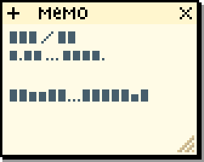

🐰 나의 미니홈피
_
□
×
🌸
나의 미니홈피
0%
✿
홈
다이어리
사진첩
방명록
프로필
🌸 프로필
_
□
×
🌸
홈피 주인
오늘도 반짝반짝 ♡
🌸 방문자: 1,234
♡ 친구: 12명
✦ 방명록: 56개
현재 시각
_
□
×
00:00:00
🏠 홈
_
□
×
파일(F)
보기(V)
도움말(H)
★
어서오세요~
★
나의 소중한 미니홈피에 오신 것을 환영해요! ♡
편히 쉬다 가세요~
다이어리
_
□
×
파일(F)
편집(E)

2026.09.07 (일) ☀️ 맑음
드디어 나만의 홈피를 만들었어요! 🎉
앞으로 여기에 일상도 올리고 사진도 올리고
방명록에 흔적도 남겨주세요~ ♡
♡ from. 홈피 주인 ♡
공사중이에요! ♡
🐰 시작
00:00